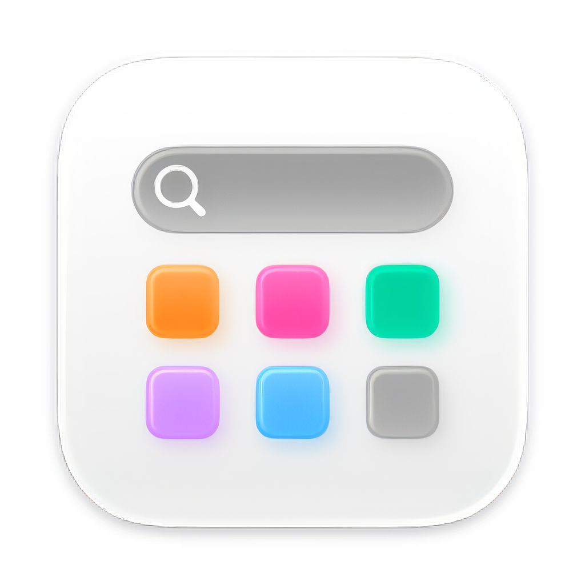
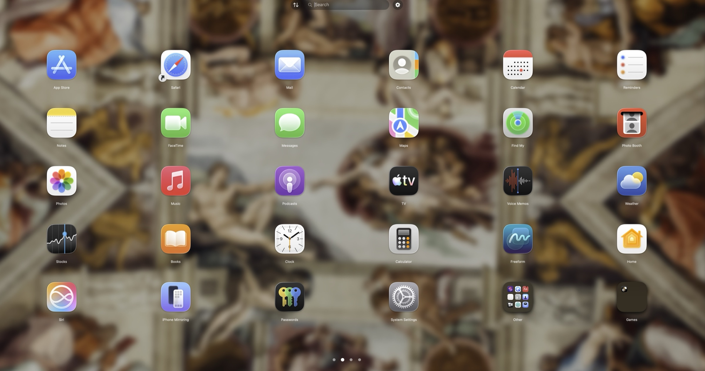
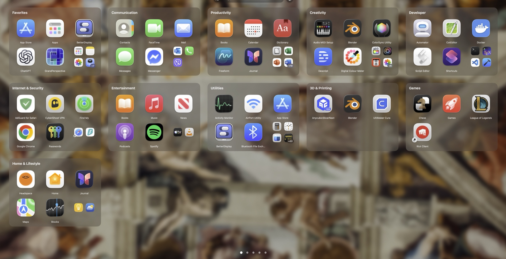
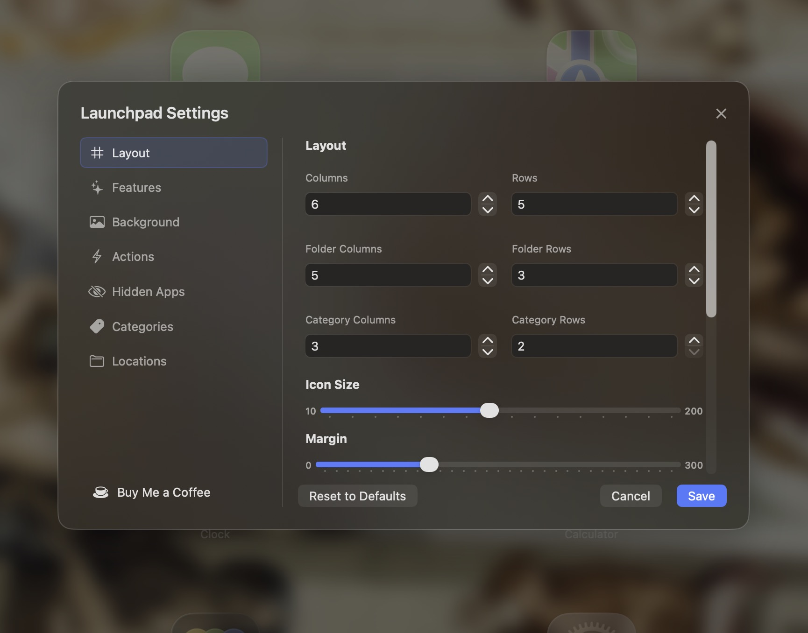

Instant search
Type to filter installed apps and press Return to launch the first result.

Launchpad++A Launchpad alternative for macOS
Launchpad++ is a fast, full-screen Mac app launcher with instant search, folders, optional categories and precise layout controls. It is always free—without accounts, activation keys, ads or analytics.
Familiar, with more control
Build the layout that works for you—or keep things simple. Categories are optional and no category collection is preinstalled.


Built around your workflow
Type to filter installed apps and press Return to launch the first result.
Control rows, columns, icon size, labels and separate top and bottom app margins.
Drag apps into folders, reorder icons and spread your collection across pages.
Create your own groups or use local rule-based suggestions. Turn the entire panel off anytime.
Use a simple color, wallpaper or image with fine blur, opacity and tint controls.
Import and export layout and category JSON files for backup or another Mac.
Adjust it live
Preview changes while the launcher is open. Save the result when it feels right, or cancel to restore your previous layout.

Privacy you can inspect
Launchpad++ works locally and contains no analytics, advertising or telemetry. It scans installed application folders to display and launch your apps.
Read the complete privacy explanation →No sensitive privacy prompts
No camera, microphone, location, Accessibility or Full Disk Access permission is requested.
No background networking
The support link opens in your browser only when you choose it.
Local preferences
Your layout, categories, hidden apps and settings remain in local macOS storage.
Free means free
Official Launchpad++ releases are free to download and use. There is no activation panel, subscription or paid feature gate.
☕ Support Launchpad++ on Buy Me a Coffee Support is optional and never unlocks hidden features.Straight answers
Yes. Official releases are free to download and use, with no account, activation key, subscription or premium tier.
The current source contains no analytics, advertising, telemetry or background networking and requests no sensitive macOS privacy permissions. The full source code is public, so anyone can check it.
Launchpad++ 1.0 runs on Apple-silicon Macs with macOS 15.6 or later. There is no Intel build yet.
No. Categories are optional and ship empty. You can create them manually, use local auto-fill suggestions, or turn the category panel off.
No. Launchpad++ is a separate app launcher. It does not replace or modify macOS system files.
Download the zip, open it and drag Launchpad++ into your Applications folder. If macOS won't open it the first time, go to System Settings → Privacy & Security and click Open Anyway.
Ready when you are
Download Launchpad++ for Apple silicon, or inspect and build the Swift source yourself.